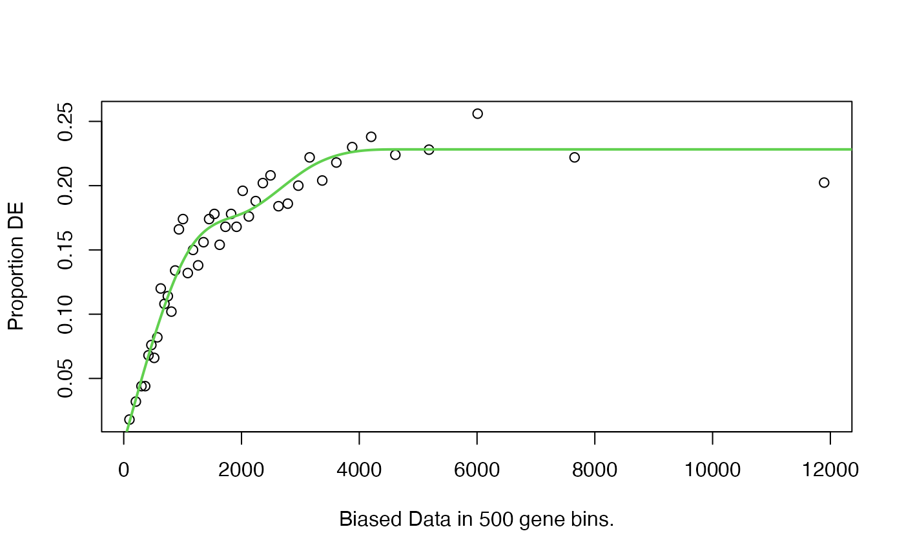

Calculates a Probability Weighting Function for a set of genes based on a given set of biased data (usually gene length) and each genes status as differentially expressed or not.
Arguments
- DEgenes
A named binary vector where 1 represents DE, 0 not DE and the names are gene IDs.
- genome
A string identifying the genome that
genesrefer to. For a list of supported organisms runsupportedGenomes.- id
A string identifying the gene identifier used by
genes. For a list of supported gene IDs runsupportedGeneIDs.- bias.data
A numeric vector containing the data on which the DE may depend. Usually this is the median transcript length of each gene in bp. If set to
NULLnullpwill attempt to fetch length usinggetlength.- plot.fit
Plot the PWF or not? Calls
plotPWFwith default values ifTRUE.
Value
A data frame with 3 columns, named "DEgenes", "bias.data" and "pwf"
with the rownames set to the gene names. Each row corresponds to a gene
with the DEgenes column specifying if the gene is DE (1 for DE, 0 for not
DE), the bias.data column giving the numeric value of the DE bias being
accounted for (usually the gene length or number of counts) and the pwf
column giving the genes value on the probability weighting function. This
object is usually passed to goseq to calculate enriched categories or
plotPWF for further plotting.
Details
It is essential that the entire analysis pipeline, from summarizing raw
reads through to using goseq be done in just one gene identifier
format. If your data is in a different format you will need to obtain the
gene lengths and supply them to the nullp function using the
bias.data argument. Converting to a supported format from another
format should be avoided whenever possible as this will almost always result
in data loss.
NAs are allowed in the bias.data vector if you do not have
information about a certain gene. Setting a gene to NA is preferable
to removing it from the analysis.
If bias.data is left as NULL, nullp attempts to use
getlength to fetch GO category to gene identifier mappings.
It is recommended you review the fit produced by the nullp function
before proceeding by leaving plot.fit as TRUE.
References
Young, M. D., Wakefield, M. J., Smyth, G. K., Oshlack, A. (2010) Gene ontology analysis for RNA-seq: accounting for selection bias Genome Biology Date: Feb 2010 Vol: 11 Issue: 2 Pages: R14
Author
Matthew D. Young myoung@wehi.edu.au
Examples
data(genes)
pwf <- nullp(genes, 'hg19', 'ensGene')
#> Loading hg19 length data...
#> Warning: initial point very close to some inequality constraints
